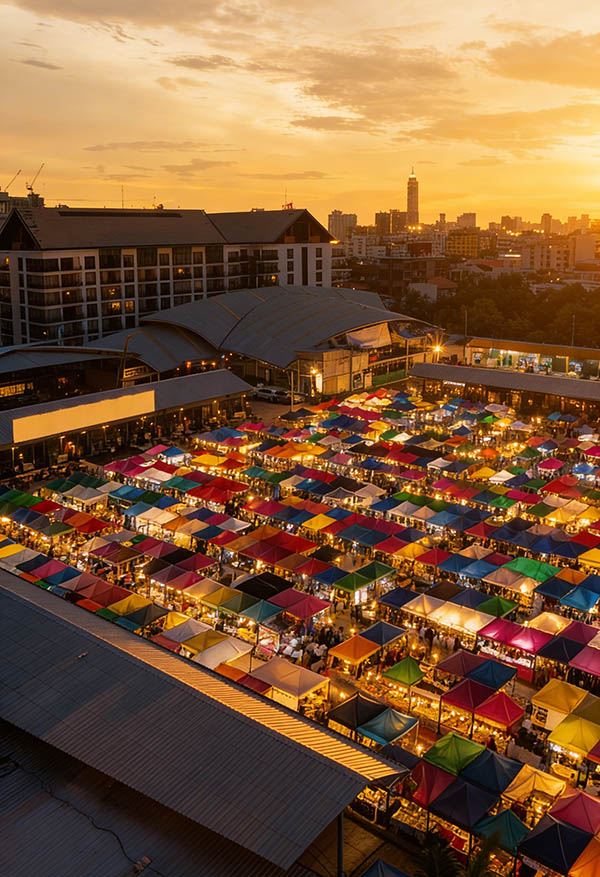
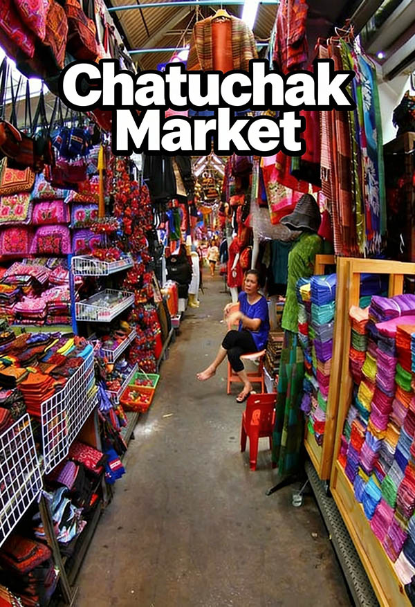

Chatuchak Weekend Market is the world's largest weekend market, sprawling across 27 acres in northern Bangkok with over 15,000 stalls selling virtually everything imaginable. Known locally as "JJ Market," this shopping wonderland attracts over 200,000 visitors every weekend with its incredible variety, bargain prices, and authentic Bangkok market atmosphere.
From vintage designer clothes and handmade crafts to exotic plants and street food, Chatuchak offers an unparalleled shopping experience that showcases Thailand's incredible diversity of products and creativity. The market is organized into 27 numbered sections, each specializing in different categories, making navigation easier despite its massive size.
What makes Chatuchak special for Royal Ivory guests is its convenient BTS accessibility (just 15 minutes from the hotel) and the incredible value for money. Whether you're hunting for unique souvenirs, trendy fashion, traditional Thai handicrafts, or simply want to experience authentic Bangkok market culture, Chatuchak delivers an unforgettable shopping adventure.
Chatuchak Weekend Market is easily accessible from Royal Ivory Hotel using Bangkok's efficient BTS Skytrain system. The journey is straightforward, air-conditioned, and takes you directly to the market entrance in under 30 minutes.
Total Cost: 65 Baht one-way | Journey Time: 15-20 minutes | Frequency: Every 3-6 minutes
From Sukhumvit MRT station, take MRT to Chatuchak Park or Kamphaeng Phet stations. Both are close to market entrances but require additional transfer time.
Direct taxi costs 120-200 Baht but can take 30-60 minutes depending on traffic. BTS is faster, more predictable, and costs less.
🚇 Travel Tip from Royal Ivory: Buy a BTS day pass (140 Baht) if you plan multiple trips. The market gets very crowded after 11 AM, so early arrival (9:00-10:00 AM) provides better shopping conditions and easier navigation through the stalls.
Understanding Chatuchak's layout is crucial for efficient shopping. The market is divided into 27 numbered sections, each specializing in different product categories. Having a plan helps you focus on areas that interest you most and avoid getting overwhelmed by the market's massive size.
| Section Numbers | Product Categories | Best For | Shopping Tips |
|---|---|---|---|
| 📱 Sections 2-4 | Clothing, accessories, bags, shoes, fashion | Trendy clothes, vintage fashion | Try before buying, check sizes |
| 🎨 Sections 7-8 | Art, handicrafts, paintings, sculptures | Unique art pieces, home decor | Negotiate prices, check authenticity |
| 📚 Sections 1 & 27 | Books, antiques, collectibles, vintage | Rare finds, collectors' items | Inspect condition carefully |
| 🌿 Section 3 & 4 | Plants, gardening, landscaping supplies | Tropical plants, orchids, bonsai | Check import restrictions |
| 🍜 Throughout | Street food, restaurants, drinks, snacks | Authentic Thai food, refreshments | Look for busy stalls, fresh food |

Chatuchak Market offers incredible variety, but certain sections and stall types provide the best value and most unique finds for international visitors. Focus on these categories for the most rewarding shopping experience.
Focus on items unique to Thailand that you can't find elsewhere: hand-woven textiles, traditional musical instruments, elephant-themed crafts, Thai cooking utensils, local spices and seasonings, and authentic vintage finds.
Bargaining tip: Start at 50% of asking price for handicrafts, 70% for clothing. Be friendly and patient - bargaining is expected and part of the fun!
Chatuchak Weekend Market is not just a shopping destination but also a food paradise featuring some of Bangkok's best street food, regional Thai specialties, and refreshing drinks to fuel your shopping adventure. The market's food scene ranges from quick snacks to full meals.
For more comfortable dining, Chatuchak has dedicated food court areas with seating, air conditioning, and expanded menus. These areas are perfect for taking breaks during long shopping sessions and offer more extensive meal options.
Successful shopping at Chatuchak requires strategy, patience, and understanding of local market culture. These practical tips help you get the best deals, avoid common mistakes, and enjoy the authentic market experience.
🤝 Effective Bargaining Strategies:
Start low: Offer 40-50% of asking price for handicrafts and art
Be friendly: Smile and maintain positive attitude - vendors respond well to friendliness
Walk away: If price doesn't work, politely leave - often vendors call you back with better offers
Bundle purchases: Buy multiple items from same vendor for better overall prices
Cash ready: Have exact change ready when you agree on price
Timing your Chatuchak visit significantly impacts your shopping experience. The market's popularity means crowds vary dramatically throughout the day and between Saturday and Sunday visits.
| Time Period | Crowd Level | Advantages | Best For |
|---|---|---|---|
| 🌅 Early Morning (9:00-11:00 AM) | Light crowds, cooler weather | Easy navigation, better bargaining | Serious Shopping |
| ☀️ Mid-Day (11:00 AM-2:00 PM) | Peak crowds, hottest weather | All stalls open, full selection | Quick Visits |
| 🌤️ Late Afternoon (2:00-5:00 PM) | Moderate crowds, cooling down | Good lighting, comfortable browsing | Leisurely Shopping |
| 🌆 Evening (5:00-6:00 PM) | Vendors packing up, limited selection | Possible last-minute deals | Bargain Hunting |
Saturday: Generally less crowded, better for first-time visitors. All sections fully operational with complete vendor participation.
Sunday: More crowded but more energetic atmosphere. Some vendors offer Sunday-only special items or sales.
Friday Evening (6:00 PM-12:00 AM): Limited evening market with restaurants, bars, and selected vendors. Great for dinner and drinks but minimal shopping compared to weekend markets.
🏥 Safety Precautions:
Stay aware: Watch for pickpockets in crowded areas - keep valuables secure
Food safety: Choose busy food stalls with high turnover for freshest food
Heat precautions: Take breaks in air-conditioned areas, drink plenty of water
Emergency info: Note nearest BTS station and keep hotel address in Thai
Chatuchak pairs well with nearby attractions. Chatuchak Park offers green space for relaxation after shopping. JJ Green Night Market (Thursday-Sunday evenings) provides additional shopping and dining options. The area also connects easily to Central World and other major Bangkok shopping destinations via BTS.
Chatuchak Weekend Market is open Saturday and Sunday from 9:00 AM to 6:00 PM. Friday evenings (6:00 PM-12:00 AM) feature the Friday Night Market section with bars, restaurants, and some vendors. The main market is closed Monday through Thursday.
From Royal Ivory Hotel: Take BTS Sukhumvit Line from Nana to Mo Chit station (8 stops, 15 minutes). Exit at Gate 1 and walk 5 minutes to market entrance. Alternatively, take MRT to Chatuchak Park or Kamphaeng Phet stations. Total journey: 20-30 minutes.
Chatuchak Market has 15,000+ stalls selling clothes, handicrafts, antiques, art, home decor, plants, pets, books, vintage items, street food, and souvenirs. Famous for unique fashion, Thai silk, wooden crafts, ceramics, and one-of-a-kind vintage finds.
Chatuchak Weekend Market covers 27 acres (35 football fields) with 27 sections and over 15,000 stalls. It's the world's largest weekend market, serving 200,000+ visitors each weekend. Plan 3-6 hours to explore major sections properly.
Yes, bargaining is expected and encouraged at Chatuchak Market. Start at 40-50% of asking price for handicrafts and art, 70% for clothing. Be friendly and patient - it's part of the cultural experience and vendors enjoy the interaction.